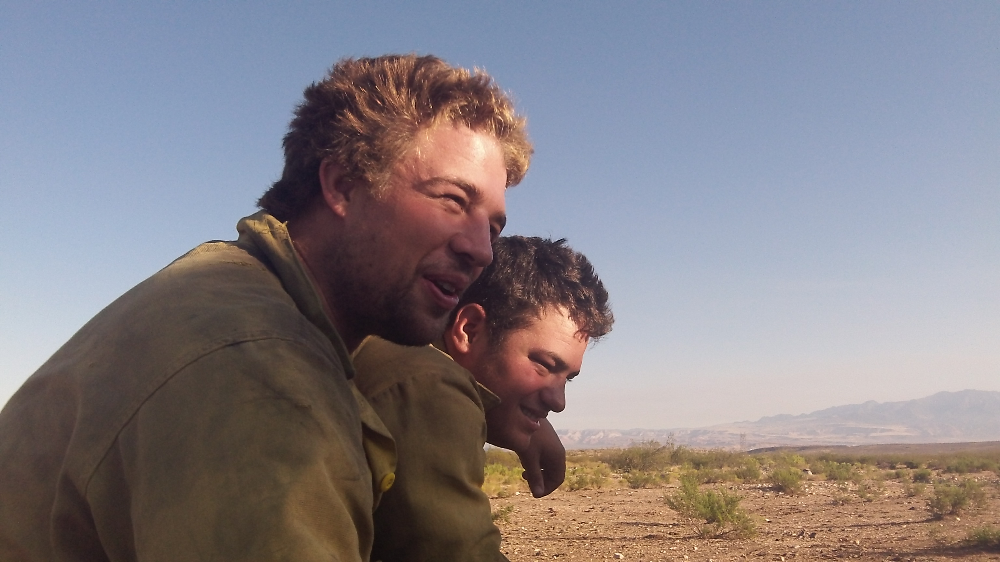
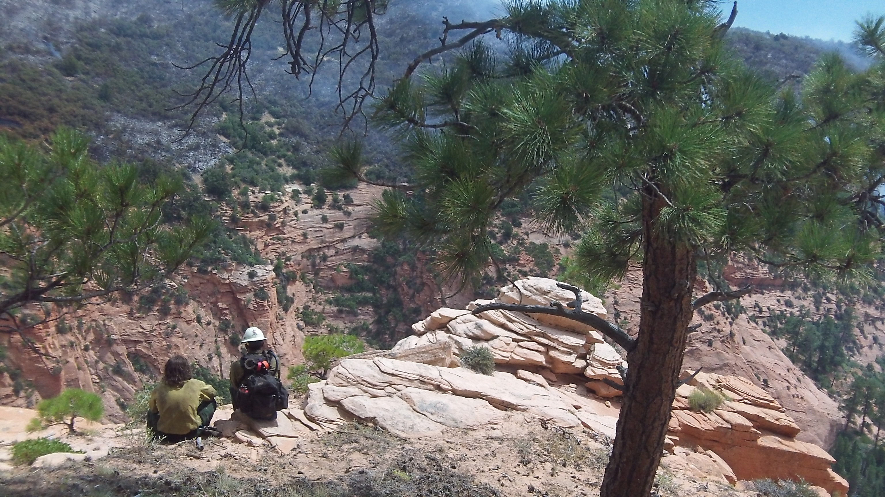

The Working Environment Of Fighting Fire
Two Men
Two Friends
What It Like
You will meet a lot of people and some of them will become good friends maybe even best friends. But sometimes you will find somebody you don’t like. That’s when you’ll learn a life lesson how to work with people you don’t get along with. Because you’re going to be in close quarters with your crew and that depends on what type of crew, you’re on.